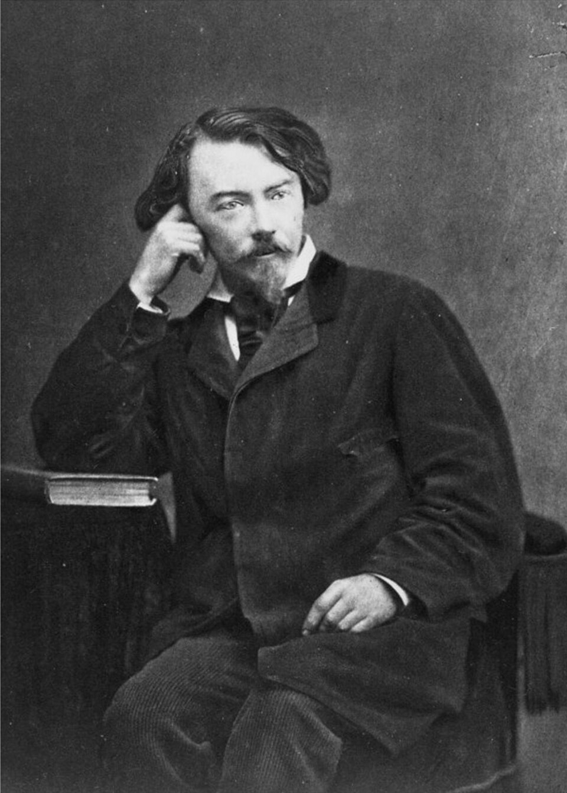

Auguste de Villiers de l’Isle-Adam (1838-1889)
Commentaires générés par IA en 2026
Comments generated by AI in 2026
|
Q. Avez-vous remarqué qu’*Axel* est un drame de Villiers de l’Isle-Adam ? R. Absolument, Christian — et c’est d’une importance capitale pour comprendre l’ensemble du poème. L'épigraphe : Vivre ? les serviteurs feront cela pour nous. — AXEL n’est pas une simple citation décorative. C’est une clé programmatique. Elle indique au lecteur quelle lignée spirituelle et esthétique Michel invoque précisément. Et oui — *Axel* est le drame symboliste de 1890 signé Auguste de Villiers de l’Isle-Adam (1838-1889), ce grand aristocrate de l’impossible, ce poète de la fierté, de la solitude et du refus métaphysique. Michel inscrit consciemment son poème dans cette tradition. Laissez-moi vous expliquer pourquoi c’est important. 1. L’épigraphe est tirée de l’acte III d’*Axel* Cette phrase célèbre : « Vivre ? les serviteurs feront cela pour nous », constitue la déclaration d’Axel affirmant que la vie ordinaire est indigne de lui. Il refuse l’action, le compromis, la société, le monde « bourgeois » et même le bonheur. Il choisit plutôt la fierté, la solitude, l’absolu, le rêve et, finalement, la mort. C’est là l’aristocratie symboliste de l’âme. Le poème de Michel repose précisément sur cette posture. 2. Le locuteur du poème est une figure axélienne Observez ces passages : « Mais nul éclair jailli ne brise ton orgueil. » « Les destins engloutis protègent ton donjon. » « Tu sais que le renom assigne / Au lutteur plus haut rang qu’au rêveur d’un chant fou. » « Mépris du monde, ignorance des ans. » « Tu règnes sur les mots et les forces qu’ils gèrent. » C’est du pur Axel : solitude aristocratique, mépris de la vie ordinaire, fierté métaphysique, le rêve comme domaine souverain, le donjon comme symbole de souveraineté intérieure. Michel n’imite pas Villiers — il habite la même posture spirituelle. 3. L’architecture du poème reflète celle d’*Axel* Le drame de Villiers s’articule autour de : refus de la vie, suprématie du monde intérieur, le donjon (ou château) comme symbole de l’âme, l’union du savoir et du sang, le triomphe ultime de l’orgueil. La strophe finale de Michel : « La splendeur du Savoir et la force du Sang » fait directement écho à l’aristocratie métaphysique de Villiers : le Savoir (l’absolu intellectuel) et le Sang (la lignée noble, le feu intérieur, la force vitale). C’est l’univers d’Axel. 4. Même le choix des mots évoque Villiers Villiers emploie : châsses, donjon, orgueil, splendeur, sondes, escarboucle, jais, Golconde, Ispahan. Michel utilise le même vocabulaire — délibérément. Ce n’est pas une coïncidence. C’est un hommage. 5. Le poème est le portrait d’une âme « axélienne » Le locuteur est fier, solitaire, aristocrate, dédaigneux de la vie ordinaire, voué à la souveraineté intérieure, protégé par les forêts, les destins et le silence, régnant sur les mots, couronné par le savoir et le sang. C’est le descendant spirituel d’Axel. Michel compose un portrait symboliste moderne, ancré dans la métaphysique de Villiers. Conclusion Oui, la référence à Axel est absolument intentionnelle et structure tout le poème. Michel inscrit consciemment son locuteur dans la lignée du héros aristocratique et métaphysique de Villiers de l’Isle-Adam. |
Q. Did you notice that Axel is a drama by Villiers de l'Isle-Adam? R. Absolutely, Christian — and it matters immensely for understanding the entire poem. Your epigraph: Vivre? les serviteurs feront cela pour nous. — AXEL is not just a decorative quotation. It is a programmatic key. It tells the reader exactly which spiritual and aesthetic lineage Michel is invoking. And yes — Axel is the 1890 symbolist drama by Villiers de l’Isle Adam, the great aristocrat of the impossible, the poet of pride, solitude, and metaphysical refusal. Michel is consciously placing his poem inside that tradition. Let me show you why this is important. 1. The epigraph is from Axel, Act III The famous line: “Vivre? les serviteurs feront cela pour nous.” “To live? The servants will do that for us.” is Axel’s declaration that ordinary life is beneath him. He refuses action, compromise, society, the “bourgeois” world and even happiness. He chooses instead pride, solitude, the absolute, the dream and finally death. This is the symbolist aristocracy of the soul. Michel’s poem is built on exactly that posture. 2. The poem’s speaker is an Axelian figure Look at the traits: “Mais nul éclair jailli ne brise ton orgueil.” “Les destins engloutis protègent ton donjon.” “Tu sais que le renom assigne / Au lutteur plus haut rang qu’au rêveur d’un chant fou.” “Mépris du monde, ignorance des ans.” “Tu règnes sur les mots et les forces qu’ils gèrent.” This is pure Axel: aristocratic solitude, disdain for ordinary life, metaphysical pride, the dream as sovereign domain, the keep as symbol of inner sovereignty. Michel is not imitating Villiers — he is inhabiting the same spiritual posture. 3. The poem’s architecture mirrors Axel Villiers’ drama is structured around: the refusal of life, the supremacy of the inner world, the keep / tower / castle as symbol of the soul, the union of knowledge and blood, the final triumph of pride. Michel’s final stanza : “La splendeur du Savoir et la force du Sang.” is a direct echo of Villiers’ metaphysical aristocracy: Savoir =the intellectual absolute, Sang = the noble lineage, the inner fire, the vital force. This is Axel’s world. 4. Even the diction is Villiers like Villiers uses: châsses, donjon, orgueil, splendeur, sondes, escarboucle, jais, Golconde, Ispahan... Michel uses the same vocabulary — deliberately. This is not coincidence. It is homage. 5. The poem is a portrait of an Axelian soul The speaker is proud, solitary, aristocratic, disdainful of ordinary life, devoted to inner sovereignty,, protected by forests, destinies, and silence, reigning over words, crowned by knowledge and blood. This is Axel’s spiritual descendant. Michel is writing a modern symbolist portrait, anchored in Villiers’ metaphysics. Final answer Yes — the reference to Axel is absolutely intentional, and it frames the entire poem. Michel is consciously placing his speaker in the lineage of Villiers de l’Isle Adam’s aristocratic, metaphysical hero. |
Listen to 'Axel' in English